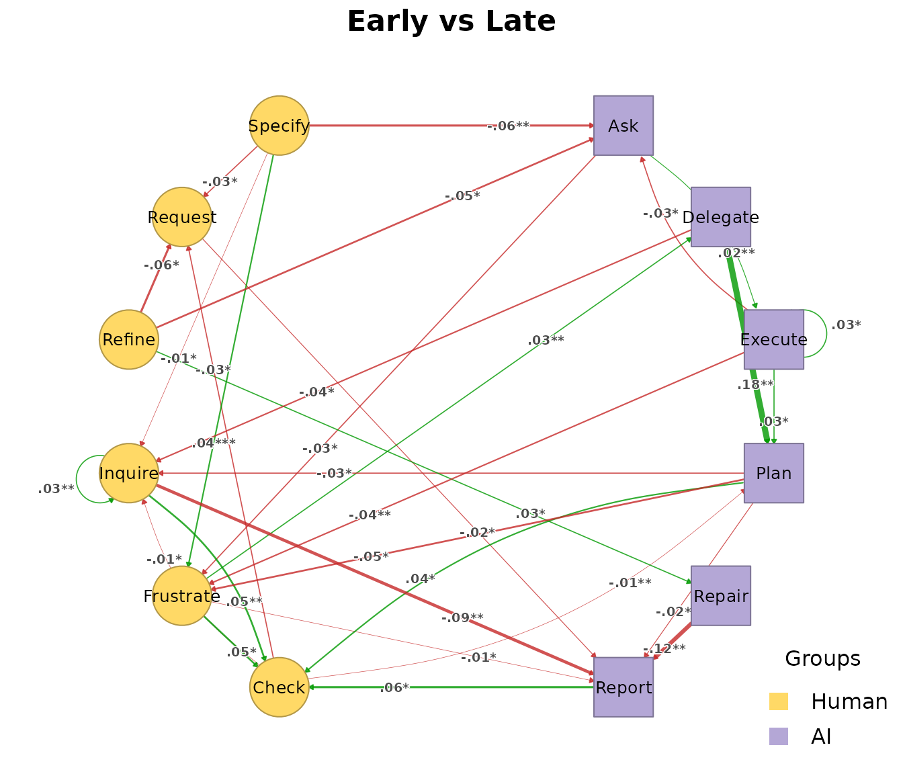
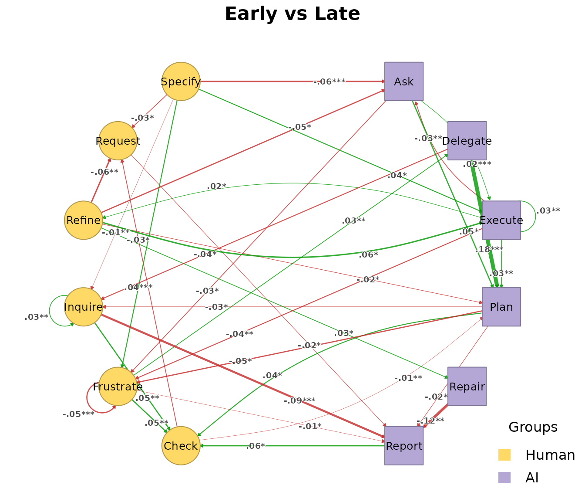

Case study: early and late sessions of vibe coding
Written by Mohammed Saqr and Sonsoles López-Pernas
Source:vignettes/articles/case-early-late.Rmd
case-early-late.RmdWhen people work with a generative AI tool over several weeks, the way they interact with it can change: they may learn which requests the tool handles well, delegate more, check less, or become more frustrated with its failures. Whether such a change has occurred is a question about the process of interaction, not about how often each action occurs, and it is answered by comparing the transition structure of early and late sessions. With two actors the comparison has a further layer: the change can lie in how each actor continues its own turn or in how the actors hand over to each other.
This case study compares the first and second halves of a set of vibe-coding sessions, in which programmers directed an AI coding agent. It asks, in turn, whether the two networks differ at all, in which actor-pair blocks the differences lie, which individual transitions differ and with what certainty, and whether the turn-taking patterns between the actors have changed.
Data
human_ai holds the coded turns of 429 vibe-coding
sessions. Each row is one coded event.
-
Session and order:
session_id,order_in_session; transitions are counted within sessions. -
Code:
code, six human codes (Check,Frustrate,Inquire,Refine,Request,Specify) and six AI codes (Ask,Delegate,Execute,Plan,Repair,Report). -
Actor type:
actor_type,"Human"or"AI". -
Phase:
phase,EarlyorLate: the sessions ordered by their first date and split in half (214 and 215 sessions).
grp <- build_htna(human_ai, actor_type = "actor_type", group = "phase")
grp
#> Group Networks (2 groups)
#>
#> Group Nodes Edges Weights
#> Early 12 135 [0.001, 0.689]
#> Late 12 134 [0.001, 0.508]Both networks contain all twelve codes; the early network has 135 non-zero edges and the late one 134.
Do the networks differ at all?
A permutation test reshuffles the sessions between the two phases and asks whether the observed differences exceed those of the reshuffled data. Its global statistics test the networks as a whole, so they need no correction for the number of edges.
perm <- permutation_htna(grp, iter = 1000, seed = 1)
perm
#> Grouped Permutation Test
#> Groups: Early vs Late
#>
#> -- Early vs Late --
#> Permutation Test: Transition Network (relative probabilities) [directed]
#> Iterations: 1000 | Alpha: 0.05
#> Nodes: 12 | Edges tested: 135 | Significant: 31
#> Global test (networks differ overall?): M = 2.760 (p = 0.000999) | S = 0.181 (p = 0.012)The sum of the absolute edge differences, 2.76, is larger than in any of the 1,000 reshuffles (p = 0.001), and the largest single difference, 0.181, is exceeded in about one percent of them (p = 0.012). The way the programmers and the agent interact did change between the two halves of the study.
Where in the actor structure?
The descriptive comparison splits the edge differences by actor-pair block; differences are early minus late.
cmp <- compare_htna(grp)
summary(cmp)
#> comparison source_actor target_actor n_cells n_nonzero_x n_nonzero_y n_changed
#> 1 Early vs Late Human Human 36 35 35 35
#> 2 Early vs Late Human AI 36 36 36 36
#> 3 Early vs Late AI Human 36 36 36 36
#> 4 Early vs Late AI AI 36 28 27 28
#> mean_difference mean_absolute_difference rms_difference max_absolute_difference
#> 1 0.00168 0.0159 0.0228 0.0631
#> 2 -0.00168 0.0179 0.0277 0.0922
#> 3 -0.00622 0.0216 0.0268 0.0571
#> 4 0.00622 0.0212 0.0428 0.1812The four blocks change by similar amounts on average (mean absolute differences between 0.016 and 0.022), so the change is not confined to one kind of transition. The AI-to-AI block holds the largest single difference (0.181). The transitions from AI codes to human codes carry more weight in the late sessions (mean difference, early minus late, −0.006), and those between AI codes carry less by the same amount: after an AI event, the next event is more often a human one late in the study. The overall similarity of the two networks stays high.
head(as.data.frame(cmp, what = "metrics"), 8)
#> comparison category metric value
#> 1 Early vs Late Weight Deviations Mean Abs. Diff. 0.0192
#> 2 Early vs Late Weight Deviations Median Abs. Diff. 0.0107
#> 3 Early vs Late Weight Deviations RMS Diff. 0.0310
#> 4 Early vs Late Weight Deviations Max Abs. Diff. 0.1812
#> 5 Early vs Late Weight Deviations Rel. Mean Abs. Diff. 0.2300
#> 6 Early vs Late Weight Deviations CV Ratio 1.0957
#> 7 Early vs Late Correlations Pearson 0.9594
#> 8 Early vs Late Correlations Spearman 0.9365The edge weights correlate at 0.959 between the phases: the late network is a modified version of the early one, not a different process.
Which transitions differ?
The permutation test also gives a p-value for each of the 135 edges.
At the 0.05 level, 31 edges differ. With 135 tests about seven would be expected by chance alone, so the edge tests are repeated with the Benjamini-Hochberg adjustment of the p-values.
permutation_htna(grp, iter = 1000, adjust = "BH", seed = 1)
#> Grouped Permutation Test
#> Groups: Early vs Late
#>
#> -- Early vs Late --
#> Permutation Test: Transition Network (relative probabilities) [directed]
#> Iterations: 1000 | Alpha: 0.05 | Adjust: BH
#> Nodes: 12 | Edges tested: 135 | Significant: 0
#> Global test (networks differ overall?): M = 2.760 (p = 0.000999) | S = 0.181 (p = 0.012)After the adjustment no edge remains significant. The difference network shows the 31 unadjusted differences, green where the early sessions have the larger weight and red where the late sessions do.
plot_htna_diff(perm)
The Bayesian comparison estimates the size of each difference with a credible interval.
bc <- bayes_compare_htna(grp, draws = 5000, seed = 1)
xtabs(~ sig, data = summary(bc))
#> sig
#> FALSE TRUE
#> 99 36
head(summary(bc))
#> comparison from to weight_x weight_y count_x count_y diff effect_size
#> 1 Early vs Late Ask Ask 0.0186 0.0185 21 22 9.62e-05 0.0172
#> 2 Early vs Late Ask Check 0.0688 0.0580 79 70 1.08e-02 1.0760
#> 3 Early vs Late Ask Execute 0.0333 0.0119 38 14 2.14e-02 3.4848
#> 4 Early vs Late Ask Frustrate 0.0991 0.1313 114 159 -3.21e-02 -2.4803
#> 5 Early vs Late Ask Inquire 0.0541 0.0720 62 87 -1.79e-02 -1.8244
#> 6 Early vs Late Ask Plan 0.4316 0.3840 498 466 4.77e-02 2.3699
#> ci_lower ci_upper ci_width p_difference p_value sig
#> 1 -0.01070 0.01122 0.0219 0.506 0.9884 FALSE
#> 2 -0.00847 0.03095 0.0394 0.863 0.2740 FALSE
#> 3 0.00936 0.03368 0.0243 1.000 0.0004 TRUE
#> 4 -0.05741 -0.00672 0.0507 0.992 0.0164 TRUE
#> 5 -0.03750 0.00114 0.0386 0.968 0.0648 FALSE
#> 6 0.00747 0.08628 0.0788 0.990 0.0204 TRUEThirty-six edges have a 95% credible interval that excludes zero and
pass the default size thresholds; the Bayesian model treats every
transition as independent and makes no correction for multiplicity, so
this count is an upper bound on the edges that changed. The first rows
of the table show the pattern: an AI Ask is followed by an
AI Execute with probability 0.033 in the early sessions and
0.012 in the late ones, and by a human Frustrate with
probability 0.099 and 0.131.
plot_htna_diff(bc)
Has the turn-taking changed?
Replacing every code by its actor type gives the meta-paths of the sessions, and the sequence comparison asks which of them became more or less frequent.
sequence_compare_htna(grp, level = "type", sub = 2:4, iter = 1000)
#> Sequence Comparison [28 patterns | 2 groups: Early, Late]
#> Lengths: 2, 3, 4 | min_freq: 5 | permutation: 1000 iter (fdr)
#>
#> pattern length freq_Early freq_Late prop_Early prop_Late resid_Early
#> Human->Human->AI->AI 4 846 646 0.0888 0.07570 3.19
#> Human->AI->AI 3 1203 986 0.1235 0.11271 2.26
#> Human->AI->AI->Human 4 976 796 0.1024 0.09327 2.06
#> Human->AI->Human 3 1813 1780 0.1861 0.20348 -2.98
#> Human->Human->AI->Human 4 788 786 0.0827 0.09210 -2.24
#> AI->Human->Human->AI 4 1245 1031 0.1307 0.12081 1.99
#> AI->AI->Human->Human 4 618 492 0.0649 0.05765 2.01
#> Human->AI->Human->AI 4 884 907 0.0928 0.10628 -3.03
#> AI->AI->Human 3 1142 958 0.1172 0.10951 1.65
#> AI->AI->AI->AI 4 21 33 0.0022 0.00387 -2.04
#> resid_Late effect_size p_value
#> -3.19 3.76 0.0839
#> -2.26 2.48 0.2238
#> -2.06 2.21 0.2238
#> 2.98 2.16 0.2238
#> 2.24 2.05 0.2238
#> -1.99 1.94 0.2238
#> -2.01 1.73 0.2517
#> 3.03 1.58 0.2517
#> -1.65 1.50 0.2517
#> 2.04 1.47 0.2517
#> ... and 18 more patternsRuns in which the AI acts twice in a row after a human event (Human Human AI AI, Human AI AI) are more frequent in the early sessions than independence predicts (positive residuals), and strict alternation (Human AI Human, Human AI Human AI) is more frequent in the late sessions. None of these patterns differs significantly after the false discovery rate correction (smallest adjusted p = 0.084), so the shift towards shorter AI turns is a tendency, not an established change.
Conclusion
The networks of the early and late sessions differ as wholes (p = 0.001), yet no single transition differs once the 135 tests are taken into account, and the four actor-pair blocks change by similar amounts. The change between the two halves of the study is diffuse: many transitions shift a little, in the direction of more frequent alternation between the programmer and the agent and fewer consecutive AI actions, rather than a few transitions changing a lot. A report of this comparison should rest on the global test and the actor-pair summary, and present the individual edge differences as descriptive.
When to use which
-
permutation_htna(): whether two networks differ, globally and edge by edge, respecting the nesting of transitions in sessions; setadjustfor the edge tests. -
compare_htna(): where the differences lie in the actor structure, and how similar the networks are overall; descriptive only. -
bayes_compare_htna(): how large each difference is and how precisely it is estimated. -
sequence_compare_htna(level = "type"): whether the turn-taking between the actors has changed, beyond single transitions.